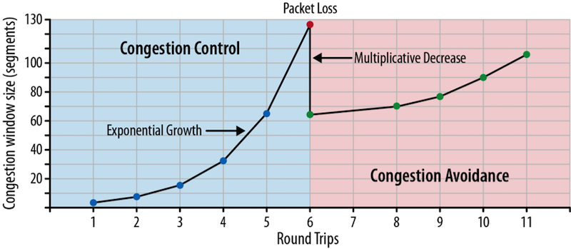
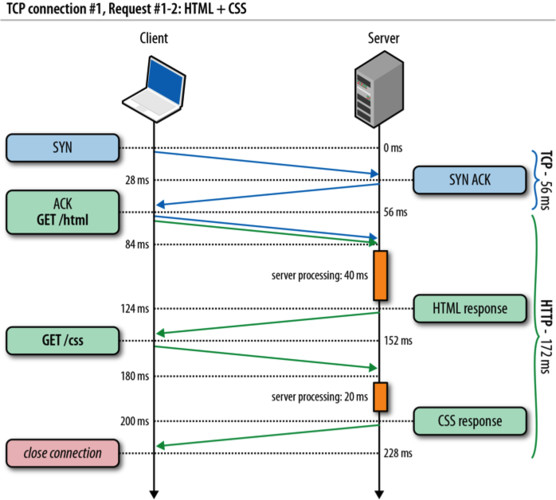

HTTP and HTML
CS290B
Dr. Bryce Boe
September 29, 2015
Presenter Notes
Today's Agenda
- TODO
- The Life Cycle of a Web Request
- HTTP Requests and Responses
- HTTP Performance (HPBN, chapters 9-11)
Presenter Notes
TO-DO
Before Thursday's Class:
- Join the class on Piazza
- Read chapters 1 and 2 (skim 9 through 11 as needed) in High Performance Browser Networking
- Read the list of project ideas: http://cs290.com/project_ideas/
- Post or comment on at least one idea on Piazza under the
project_idea"folder" - Start Learning Ruby (begin Ruby Code Academy)
Presenter Notes
The Life Cycle of a Web Request
Presenter Notes
Review: The Two Endpoint Basics
A web browser is a process (at least one) that runs on an operating system. It:
- responds to user input
- renders the display
- utilizes the network
A web server is a process (at least one) that runs on an operating system. It:
- responds to network requests
- loads resources that may come from file system, database, other servers
Presenter Notes
Core Components of a Web request
- Web server: Opens a TCP socket to listen for requests
- Browser: Makes a DNS query to obtain an IP address for www.reddit.com
- Browser: Establishes a TCP connection to the IP address
- Web server: Accept the TCP connection
- Web server: Add TLS context to the TCP connection
- Browser: Wraps a TLS session on-top of the TCP connection
- Browser: Sends an HTTP request over the TLS session
- Web server: Parse the request, fetch and send the requested resources
Presenter Notes
HTTP
Presenter Notes
Chrome Network Table
By the end of today's lecture, you should understand this output:

Presenter Notes
History
The year is 1990. The Internet has existed for ~20 years, email for ~8.
Tim Berners-Lee has the idea to combine HyperText and the Internet. He creates the first version of HTTP and HTML.
HyperText: Links documents together via HyperLinks
- 1993: Mosaic, the first web browser, is created at UIUC
- 1994: Marc Andreessen leaves UIUC and founds Netscape with Jim Clark
Presenter Notes
The First Web Server

Presenter Notes
HTTP Explained
It its original, simplest version:
- Open a TCP socket (standard port is 80)
- Send an ASCII request for a resource (
GET mypage.html) - Response comes back containing only the content of
mypage.html - Close the TCP socket
HTTP was originally designed to:
- Send HTML (was later extended to send anything)
- To facilitate interaction between a web browser and a web server (now also used heavily for server-to-server communication)
Presenter Notes
HTTP Request/Response Components
HTTP Request
- Verb: What do you want to do (e.g., GET, POST)
- Resource: What is the logical path of the resource you want
- HTTP Version: What version of HTTP are you using?
- Headers: Standard way to specify or request optional behavior
- Body: Content that is being sent to the server (e.g., a file upload)
HTTP Response
- HTTP Version: Indicates the HTTP version the server is "speaking"
- Status Code: Indicates success, failure, or other possible response states
- Headers: Provides meta data about the response.
- Body: The primary payload of the response (for a successful GET request, this contains the resource content)
Presenter Notes
HTTP Components Example

Presenter Notes
HTTP Verbs GET and POST
GET
- Request a copy of a resource
- The request should have no side-effects (i.e., doesn't change server state)
- GOOD:
GET /fluffy_kitty.jpg - BAD:
GET /users/sign_out
POST
- Sends data to the server
- Generally used to create a resource
- Has side-effects (e.g., creates a resource)
- Not idempotent (i.e., making the same request twice creates two
separate, but similar resources)
- "Do you want to submit your form again?"
Presenter Notes
HTTP Verbs PUT and DELETE
PUT
- Sends data to the server
- Often used to update an existing resource
- Has side-effects
- Should be idempotent (e.g., updating a resource twice should result in the same effect to the resource)
DELETE
- Destroys a resource
- Has side effects
- Should be idempotent
- GOOD:
DELETE /session/<id>(for log out)
Presenter Notes
HTTP Verb HEAD
HEAD
- Exactly like GET but excludes the body in the response
What can HTTP HEAD be used for?
Presenter Notes
HTTP Verb Misuse
Correct HTTP verb usage is not enforced, and is often misused.
What do you think the following is supposed to do?
GET /post/5?action=hide
What other problem do you think can occur with the misuse of HTTP verbs?
Presenter Notes
Other HTTP Verbs
- TRACE
- OPTIONS
- CONNECT
Presenter Notes
HTTP Resource
Specifies a logical hierarchy to access a resource:
GOOD: /gp/product/1565925092/ BAD: /index.jsp?page_id=4251
Query String
- The portion of the resource after the question mark
- Used to assist in locating the resource
- Values are assigned using the equal token (e.g.,
id=15) - Multiple values can be concatenated via ampersand (
&)
Example:
http://www.reddit.com/r/ucsantabarbara/?sort=new&t=all
Presenter Notes
HTTP Version
Version strings are often used in protocols to make it easy to evolve the protocol.
With HTTP different versions have different behavior:
- (1991) HTTP 0.9 (retroactively versioned): Single line protocol with no
headers.
GET index.html - (1996) HTTP 1.0: Added headers, and a version string
- (1999) HTTP 1.1: Connection keep-alive by default, additional caching mechanisms. Primary HTTP version used today
- (2015) HTTP 2.0: Binary framing, header compression, many other optimizations. Discussed in more detail in a future lecture
Presenter Notes
HTTP Headers
Provides metadata for the request and response.
What HTTP headers do you know of?
HTTP Headers: Accept
Indicates the format of the resource
Accept: text/html
I desire the resource in html format.
Accept: application/json
I desire the resource as a JSON document.
Accept application/json,application/xml
I prefer a JSON document, but if you cannot do that then an XML document will do.
Presenter Notes
HTTP Headers: Accept-*
Accept-Encoding
Indicates preferred encoding for the response body.
Accept-Encoding: bzip2,gzip
I prefer the data compressed via bzip2. If that cannot be done, please gzip the response.
Accept-Language
Indicates the preferred language for the resource
Accept-Language: es,en-US
I prefer Spanish, but will accept US-English.
Presenter Notes
HTTP Headers: Host, User-Agent
Host (required in HTTP 1.1 request)
Indicates the DNS hostname associated with the desired resource.
Why is the HOST header required?
User-Agent
Indicates information about the client (web browser, crawler, tool) to the web server.
User-Agent: Mozilla/5.0 (Macintosh; Intel Mac OS X 10_10_5) AppleWebKit/537.36 (KHTML, like Gecko) Chrome/45.0.2454.99 Safari/537.36
Can be used to serve different content to different clients. However, try to avoid doing so.
Presenter Notes
HTTP Headers: Set-Cookie, Cookie
Set-Cookie
A response header informing the browser to use the provided cookies in subsequent requests to the server.
Cookie
A request header containing the data previously set by the server via a
Set-Cookie header.
What kind of information might one put in a cookie?
What security concerns may exist with cookies?
Presenter Notes
Other HTTP Headers
Caching Related Headers
- ETag
- Date
- Last-Modified
- Cache-Control
- Age
Security Related Headers
- Strict-Transport-Security
- X-Frame-Options
- X-Forwarded-Proto
X- prefixed headers are not part of the official specification and may later
become standardized.
Presenter Notes
HTTP Statuses
The HTTP response status indicates the outcome of the request. Status codes fall into one of five categories:
- 1XX - Informational
- 2XX - Successful
- 3XX - Redirection
- 4XX - Client Error
- 5XX - Server Error
Presenter Notes
Common HTTP Statuses
- 200 OK: The requested resource is being returned.
- 301 Moved Permanently: The resource has been moved and the browser should
always use the new URL provided via the
Location: http://...header. - 302 Found: The resource can be found at another location.
- 304 Not Modified: Useful with
HEADrequests containing a cache header (e.g.,If-Modified-Since) to see if aGETrequest is needed. - 403 Forbidden: The request is not authorized to access the resource.
- 404 Not Found: The resource does not exist.
- 500 Internal Server Error: Something crashed on the server.
- 503 Service Unavailable: Temporary failure on the server-side.
Presenter Notes
HTTP Request Body
HTTP PUT and POST requests typically have a body associated with them. HTML
form elements usually result in a POST request with a x-www-form-urlencoded
type.
Example:
curl http://httpbin.org/post --data 'username=bboe&comment=Hi There' -v
1 2 3 4 5 6 7 8 | POST /post HTTP/1.1
Host: httpbin.org
User-Agent: curl/7.43.0
Accept: */*
Content-Length: 30
Content-Type: application/x-www-form-urlencoded
username=bboe&comment=Hi There
|
Presenter Notes
HTTP Response Body
The body of a response usually contains the requested resource content.
1 2 3 4 5 6 7 8 | HTTP/1.1 200 OK
Content-Type: text/html; charset=utf-8
Content-Length: 9973
<!DOCTYPE html>
<html lang="en">
...
</html>
|
Presenter Notes
Try it! Dumb Server
Listen for a TCP connection
nc -l localhost 4000
Browse to: http://localhost:4000
Paste the following into your terminal:
1 2 3 4 5 6 7 8 9 | HTTP/1.1 200 OK
Content-Type: text/html; charset=utf-8
Content-Length: 106
<!DOCTYPE html>
<html lang="en">
<h1>HTML is easy!</h1>
<img src="http://i.imgur.com/oXxTj5g.gif">
</html>
|
Presenter Notes
HTTP Performance
Prior to HTTP 1.1, one TCP connection was used for a single HTTP session. Thus 1 request per connection.
What performance implications does having 1 request per session have?
Presenter Notes
TCP Connection Delay
Establishing a TCP connection requires 1 round-trip.

Image Source: “High Performance Browser Networking,” by Ilya Grigorik
Presenter Notes
Slow Start and Congestion Avoidance
The early phases of a TCP connection are bandwidth constrained.

Image Source: “High Performance Browser Networking,” by Ilya Grigorik
Presenter Notes
TCP Congestion Window Size (cwnd)
It takes a fair amount of time to get up-to-speed. Making new connections per HTTP request is not terribly efficient.

Image Source: “High Performance Browser Networking,” by Ilya Grigorik
Presenter Notes
HTTP Keep-Alive
HTTP 1.1 officially added support for the Connection header most commonly
used as:
Connection: keep-alive
In fact, with HTTP 1.1, the default is keep-alive. The alternative, and the
way to signal the end of the HTTP session is:
Connection: close
With a keep-alive HTTP session, the server waits some amount of time for an additional request after processing the most recent request.
Presenter Notes
HTTP Keep-Alive Session

Image Source: “High Performance Browser Networking,” by Ilya Grigorik
Presenter Notes
HTTP Pipelining
With HTTP keep-alive, we can make multiple requests on a single TCP connection. Success!
But, we're still waiting for the current response before we can issue the next request. Why wait?
Presenter Notes
HTTP Pipelining Session

Image Source: “High Performance Browser Networking,” by Ilya Grigorik
Presenter Notes
Think About it
What sort of issues might occur with HTTP pipelining?
Presenter Notes
Pipelining Issues
Head of Line Blocking
Head of line blocking means that a request that takes a long time is blocking another request from occurring.
Extra work for the server
Pipeling may require the server to buffer future responses while blocked on the head of the line. These extra resources can exhaust the server.
Furthermore, if an error occurs the server may end up doing the same work twice.
Adoption
Many intermediaries (proxies, caches) simply do not support HTTP pipelining thus making the feature less appealing.
Presenter Notes
More Speed
A single web page may have tens of resources. In practice obtaining each resource serially over the same TCP connection is too slow.
What can be done to get more speed?
Presenter Notes
Concurrent HTTP Sessions
Most browsers will open up to six concurrent connections to the same server.

Image Source: “High Performance Browser Networking,” by Ilya Grigorik
Presenter Notes
Even more speed
According to HTTP Archive the average number of resources for websites they crawled is ~100. With up to six connections each HTTP session must fetch approximately 16 resources. With head-of-line blocking this may still be too slow.
What can we do?
Presenter Notes
Domain Sharding
Domain sharding is the process of separating resources to different domains, e.g., i.ytimg.com, s.ytimg.com.
The web browser will make up to 6 connections for each domain.
Reduces page load time for some work-loads (test to see if it's right for you).
Presenter Notes
Hacks that work
Concurrent sessions and domain sharding are hacks to get more performance out of an existing system. Using these hacks makes deployment more complicated.
Other Performance Related Hacks
- CSS/JS concatenation and minimization
- Image spriting
The Future is Here!
In a future lecture we'll talk about how HTTP 2.0 obviates all of these hacks.
Presenter Notes
Thursday's Lab
Bring your laptop, with the battery fully charged.